Warning
Information should be carefully checked on its correctness and manually changed when needed.
Departure/ Arrival/ Alternate
The tabs Departure, Arrival and Alternate have similar content but the information will differ based on the aerodrome information, weather conditions and user specified information. There many expanders in this section. The top ones are automatically filled with either static, or real-time information. All information is combined into visual plots and graphs that are shown in the last expanders.
For demonstration purposes, let’s create a new clean flight plan where we depart from the Netherlands, Rotterdam Airport (EHRD) with Arrival Texel (EHTX).
The alternate aerodromes are sorted on the top closest aerodromes using the distance from both the departure and arrival location.
When using the flight Map tab, more information per aerdrome will be shown interactively such as runway type (asphalt, grass etc) and whether an aerdrome is public, private, military, etc
After selecting the aerodromes in the side panel and pressing the Load Aerodromes button, information is retrieved and processed from both static and live data sources.
With tens of thousands of aerodromes, and the always changing variables it may require manual adjustments.
|

Note
User defined changes for the aerodromes are stored in your personal environment and loaded the next time for this aerodrome.
Badges
At the top of SkyWalk are shown badges that summarizes the processed information. Each badge describes an event and is colored in green, orange or red. The first word describes the item and the second the status. Depending on the item, the status can be a value or description. Information is gathered and processed across all tabs and expanders. Use the refresh button at the bottom of SkyWalk to make sure all information is processed.
No Data |
|
Information is processed |
|
Warning |
|
Critical |
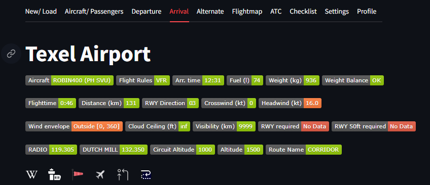 |
Overview of all badges
An overview of all badges is shown in the table:
Description |
Badge |
|---|---|
Aircraft type |
|
Visual Flight Rules or Instrument Flight Rules |
|
Scheduled time of departure |
|
Fuel quantity in liters at departure/arrival |
|
Total weight of the aircraft at departure/ arrival |
|
Weight and balance status |
|
Estimated duration of flight |
|
Estimated flight distance |
|
Runway direction for takeoff or landing |
|
Crosswind speed at the runway |
|
Headwind speed at the runway |
|
Current wind conditions |
|
Altitude of the cloud base |
|
Visibility range |
|
Minimum runway length required |
|
Runway length at 50 feet required |
|
Tower frequency |
|
Circuit altitude |
|
Departure or Arrival altitude |
|
Flight route identifier |
Aerodromes and ATC
The Aerodrome expander presents information about the aerodrome itself.
The ATC Frequencies expander shows information about the frequencies. These frequencies used in the ATC Transcripts.
|
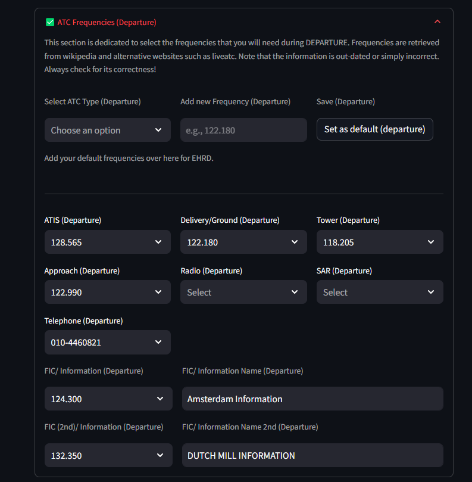 |

Enroute
The Route expander contains three input fields as listed below. In addition, there are two custom input fields for images/ pdf files or any other content.
In case of the Netherlands, the AIP is set as default in the first field but can be customized.
Name of the departure/arrival
Altitude for the departure/arrival
Circuit Altitude
In the example below, the departure name is ROMEO with altitude of 1500ft and the circuit altitude is 1000ft In the left field, the following url is set: “https://eaip.lvnl.nl/web/2023-04-06-AIRAC/graphics/eAIP/EH-AD-2.EHRD-VAC-3.pdf”
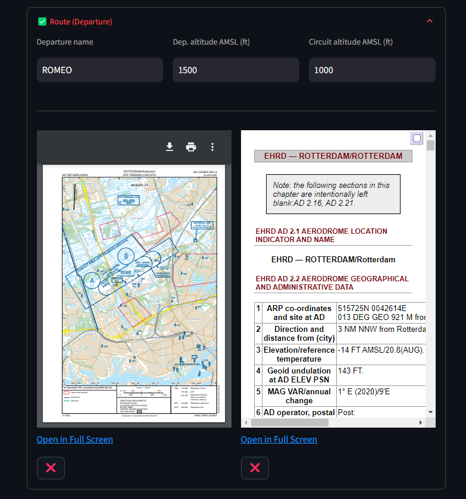 |
METAR Information
METAR (Meteorological Aerodrome Report) is a standardized format for reporting current weather observations. It is used in aviation to provide critical information about the weather conditions at airports and in the vicinity.
In SkyWalk, the data is derived from National Oceanic and Atmospheric Administration (NOAA) which provides information for thousands of weather stations. Some weather station return information every 30 minutes while others on a daily basis, and some do not return any information. Reasoning is malfunctioning or any other kind.
Real-time weather information helps pilots to make informed decisions about takeoff, landing, and in-flight operations. In SkyWalk, METAR information is processed with focus on:
Safety
Flight Planning
Operational Efficiency
The following information from the METAR stations is processed in various parts of SkyWalk:
Wind Direction
Wind Strength
Wind Variation
Wind Gust
Temperature
Dewpoint
Visibility
Weather: rain/snow/etc information
Note
METAR stations are removed that did not return any information in the last 4 hours. However, stations can be checked on activity and included again by a simple press on the button in the Settings tab.
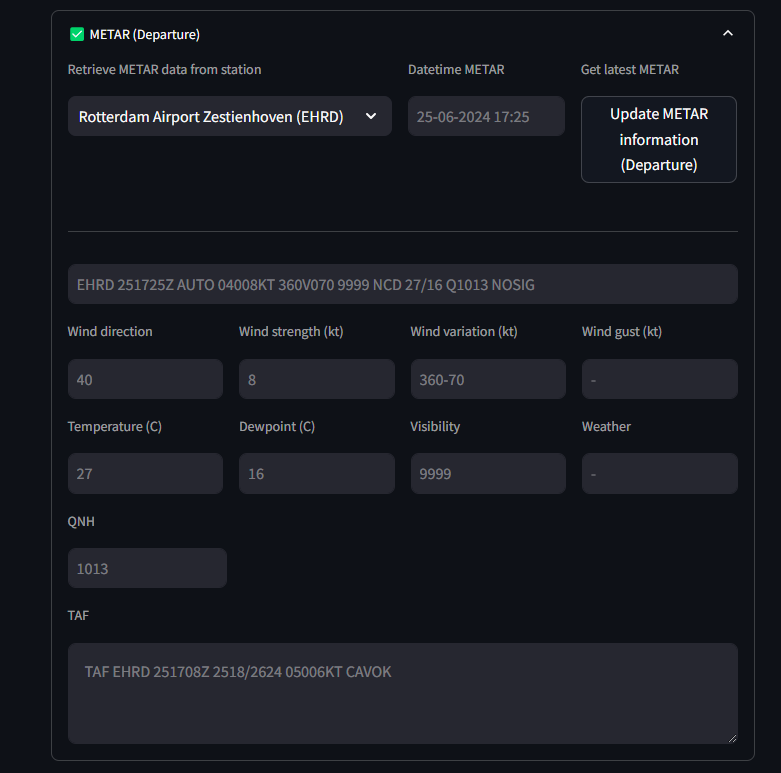 |
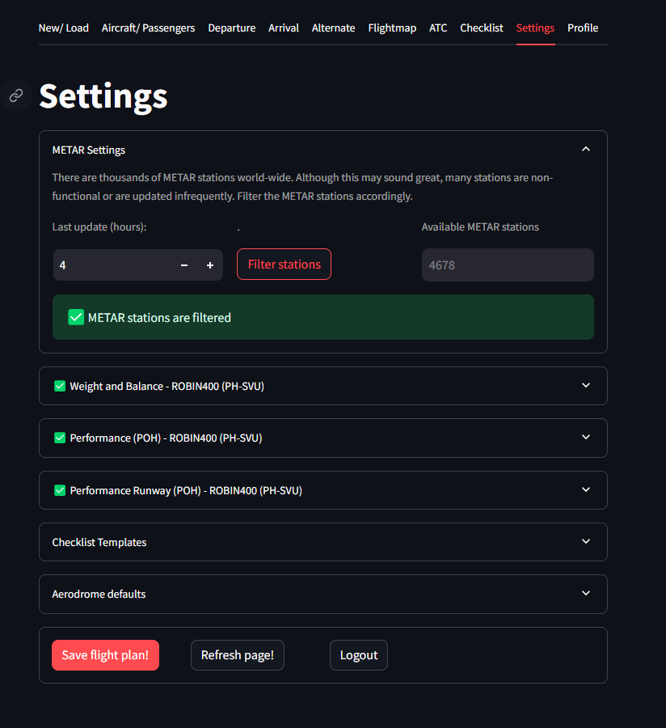 |
Variable (VRB) Wind
When a VRB or variable wind is returned on the METAR, such as: VRB02KT, it means that no wind angle can be used in the computations.
In SkyWalk, a message will be shown that the wind is VRB. Note that when a different weather station is selected and the VRB is ignored, the wind remains VRB on the location.
Warning
Wind is variable (VRB) and therefore many computations can not be made.
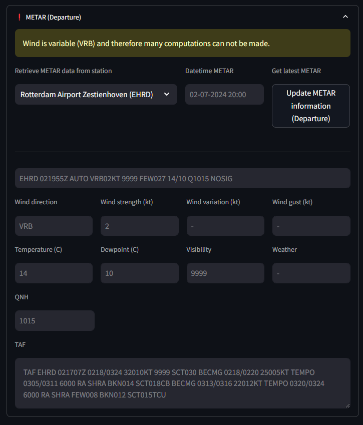 |
Runway Length/ Information
A correct estimation of the required runway length is a fundamental factor ensuring the safety and efficiency of aircraft operations. To compute the required runway length for takeoff and landing, various factors are needed, including weather conditions, aircraft performance characteristics, but also the guidelines provided in the Pilot’s Operating Handbook (POH).
Factors Affecting Runway Length:
Weight: The weight of the aircraft, fuel and passengers.
Weather Conditions: Temperature Correction: Adjust for temperature using performance charts. Higher temperatures generally increase the required distance. Wind Correction: Modify the takeoff distance based on wind conditions. Headwinds decrease and tailwinds increase the required distance.
Runway Conditions: Surface Conditions: Adjust for runway surface conditions, considering factors like wet or contaminated surfaces. Altitude Correction: Account for the elevation of the airfield. Higher altitudes require longer takeoff distances due to reduced air density. Slope: The slope of the runway.
The Pilot’s Operating Handbook (POH) provides specific performance charts and tables for each aircraft type, detailing the required runway lengths for various weights, configurations, and environmental conditions. The POH table can be added in SkyWalk in the tab Settings for POH details. After providing the data, A model is learned on the input data for which the fit with actual vs. predicted is shown in the plot.
Note
Information from the POH must be saved in SkyWalk for accurate runway length computations tailored to the specific aircraft.
Required Data
There are multiple data sources required to determine the required runway length. The data can be incomplete, missing or incorrect. Make sure to update the information accordingly. Data pre-processing is readily performed to determine the surfaces and generic catagories. This information is important to accuratenly determine the runway takeoff and landing distances.
For each aerdrome, information is loaded from a static data source and includes information such as runway angle, surface type, runway lenght, slope.
METAR data is used for temperature, wind and altitude corrections.
The following runway types are available:
Surface: concrete, asphalt, grass, gravel, earth, water, rock, sand, ice, dirt, turf, pem, grooved
Surface (generic): hard, soft, water, unknown
Condition: = good, poor, unknown
Runway Takeoff/ Landing Computations
The runway length computations are shown in the tab Runway takeoff/landing Calculations. Each correctionfactor that is applied is
and easy to follow which factor has the most effect on the takeoff and/or landing distance.
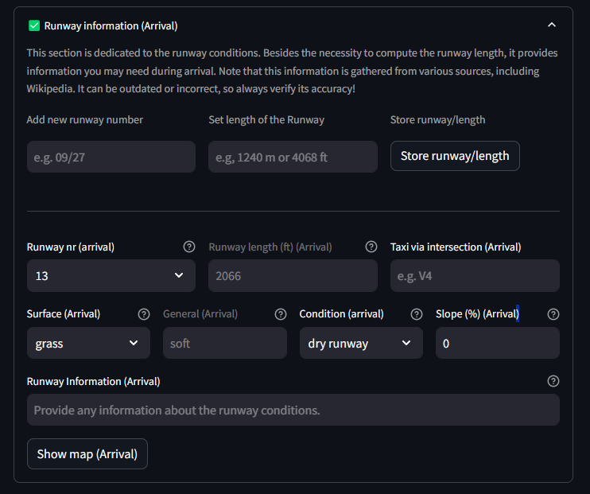 |
|

Cloud Plot
The cloud plot is a visualization that is creatd using the METAR information and the custom user input. It will visualy demonstrate the height of cloud, and whether there is a cloud-base formation within the circuit and departure/arrival altitude.
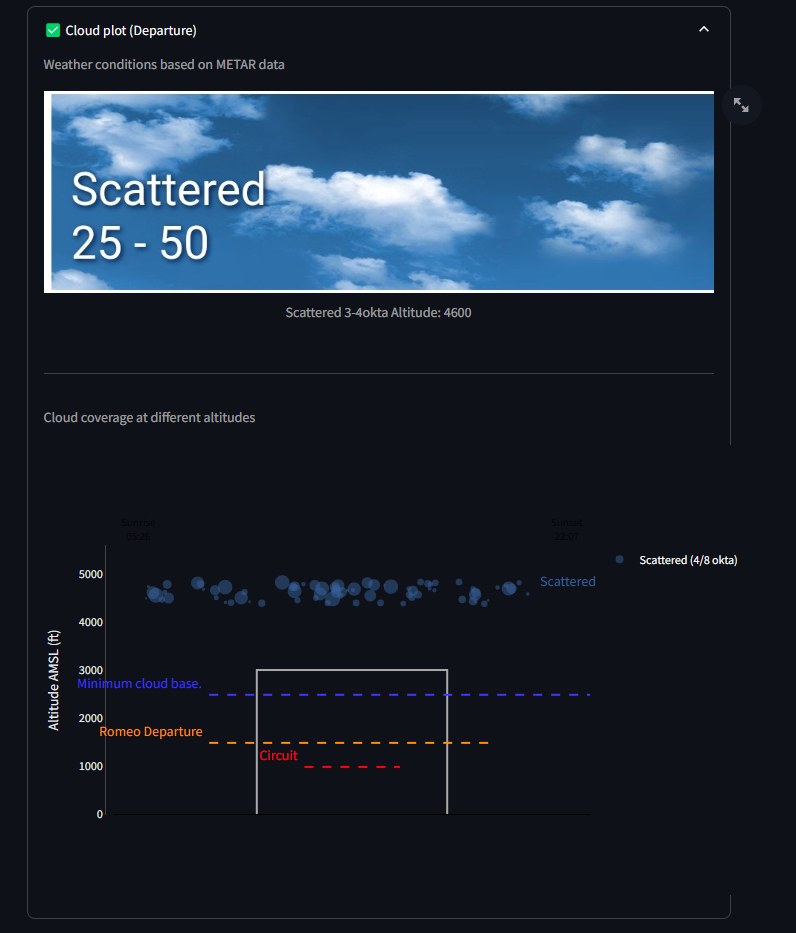 |
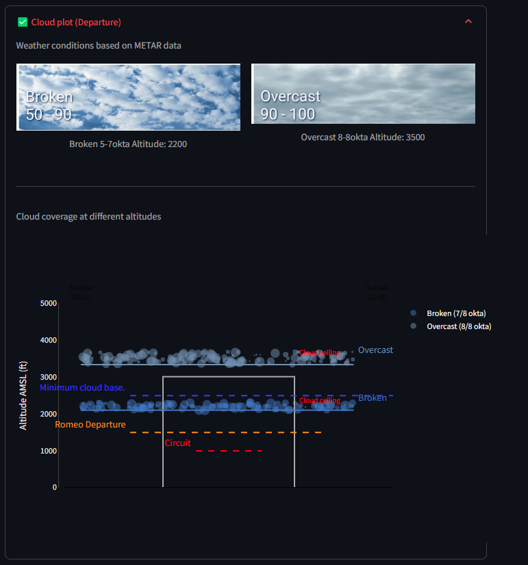 |
Wind Envelope: Crosswinds and Headwinds
Understanding the impact of crosswind and headwind is crucial for safe flight operations:
Headwind: A wind blowing directly against the direction of travel. Headwinds increase the relative airspeed, providing better lift during takeoff and landing but can increase fuel consumption and flight time when cruising.
Crosswind: A wind blowing perpendicular to the direction of travel. Crosswinds can make takeoff and landing challenging due to the lateral force exerted on the aircraft, requiring pilots to use techniques such as crabbing or side-slipping.
The components of wind relative to the runway can be computed using trigonometric formulas. Given a runway aligned at angle θ_r and wind coming from angle θ_w with speed V_w:
Headwind Component:
\[V_{headwind} = V_w \cos(\theta_w - \theta_r)\]Crosswind Component:
\[V_{crosswind} = V_w \sin(\theta_w - \theta_r)\]
These formulas help in determining the effective headwind and crosswind components based on the wind’s angle and speed relative to the runway’s orientation.
Example Calculations
For demonstration purposes, let’s make a some computations. In the first example, the METAR reports a wind angle/strength of 24025, and we will depart from runway 24. The headwind and crosswind components can be calculated as follows:
Runway angle, θr = 240°
Wind direction, θw = 240°
Wind speed, Vw = 25 knots
\[V_{headwind} = 25 \cos(240° - 240°) = 25 \cos(0°) = 25 \times 1 = 25 \text{ knots}\]\[V_{crosswind} = 25 \sin(240° - 240°) = 25 \sin(0°) = 25 \times 0 = 0 \text{ knots}\]
If the wind direction changes to, for instance, 260°, the components would be:
Runway angle, θr = 240°
Wind direction, θw = 260°
Wind speed, Vw = 25 knots
\[V_{headwind} = 25 \cos(260° - 240°) = 25 \cos(20°) \approx 25 \times 0.94 \approx 23.5 \text{ knots}\]\[V_{crosswind} = 25 \sin(260° - 240°) = 25 \sin(20°) \approx 25 \times 0.34 \approx 8.5 \text{ knots}\]
Wind Envelope plot
The wind envelope is a graphical representation to illustrate how wind strength can vary during departure and arrival. In the previous example were shown two examples of how the headwind and crosswind component changes based on the wind angle. In the wind envelope, all possible scenarios from 0-360 degrees are shown including the wind gust if shown by the METAR.
The wind envelope thus shows whether the crosswind and headwind remain within acceptable limits. Also in case of wind gusts. These limits can be based on personal preferences, aircraft specifications, or guidelines provided by an air club. The default limits are typically set to 25 knots for headwind and 15 knots for crosswind.
All possible wind conditions are represented in the wind envelope:
The blue line represents the wind limits for the given crosswind and headwind, including all intermediate points.
The red cross (X) shows the actual crosswind and headwind for the given METAR.
The red line depicts the wind strength across all possible angles (0-360 degrees), accounting for potential changes in wind direction.
The orange line illustrates the impact of wind gusts for the given angle.
Interpretation of the wind envelope:
If the red cross (X) is outside the blue line, the wind strength exceeds the maximum wind limits.
If any part of the red line extends beyond the blue line, it indicates that certain wind angles can push the aircraft outside the maximum crosswind/headwind limits.
If the orange line is outside or moves outside the blue line, it indicates that wind gusts on the METAR can push the aircraft beyond the maximum crosswind/headwind limits.
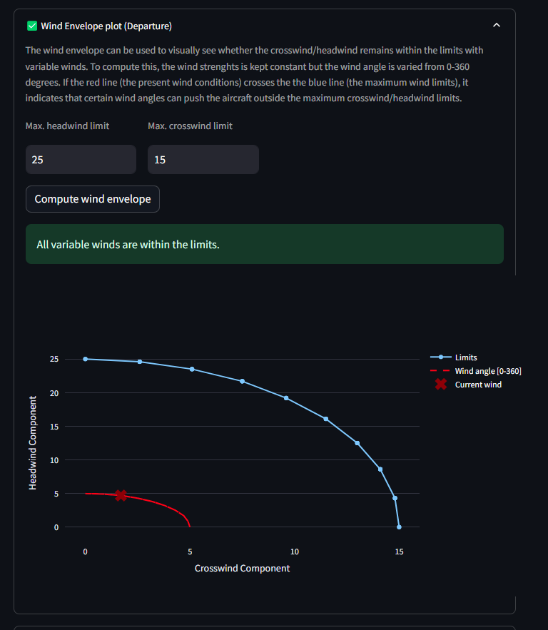 |
Two more examples in which the left example shows that the wind is outside the limit boundaries for runway 35. The right example shows large wind variation but remains inside the wind envelope for the runway.
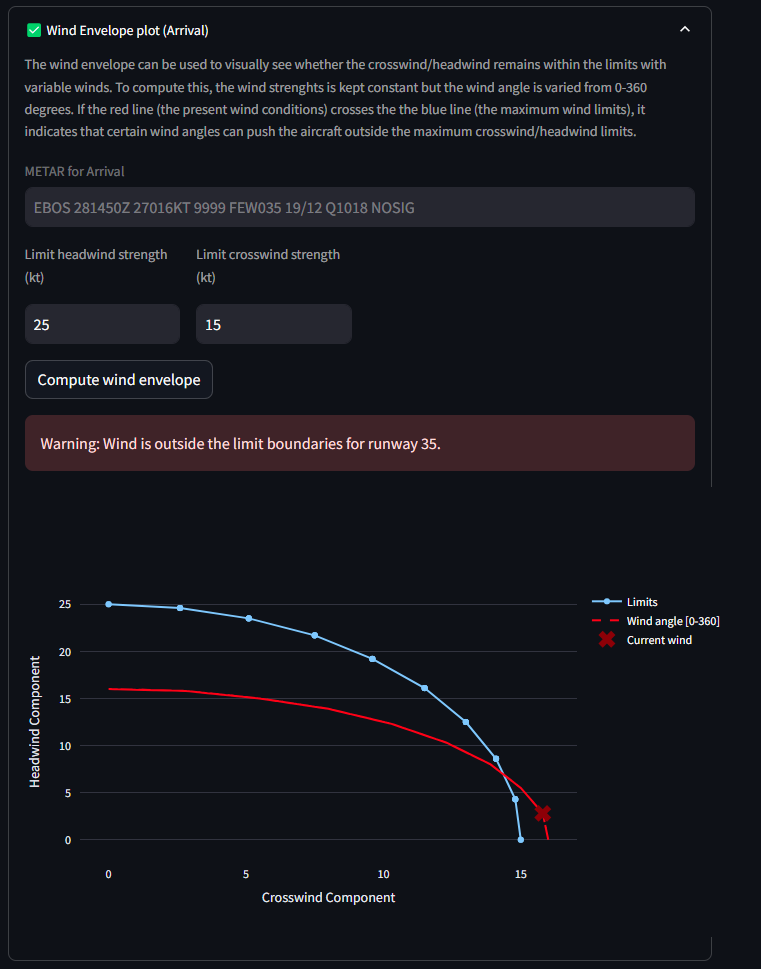 |
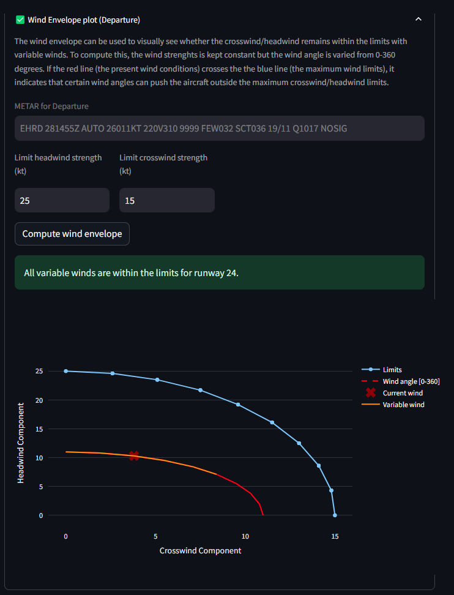 |